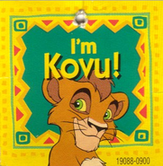
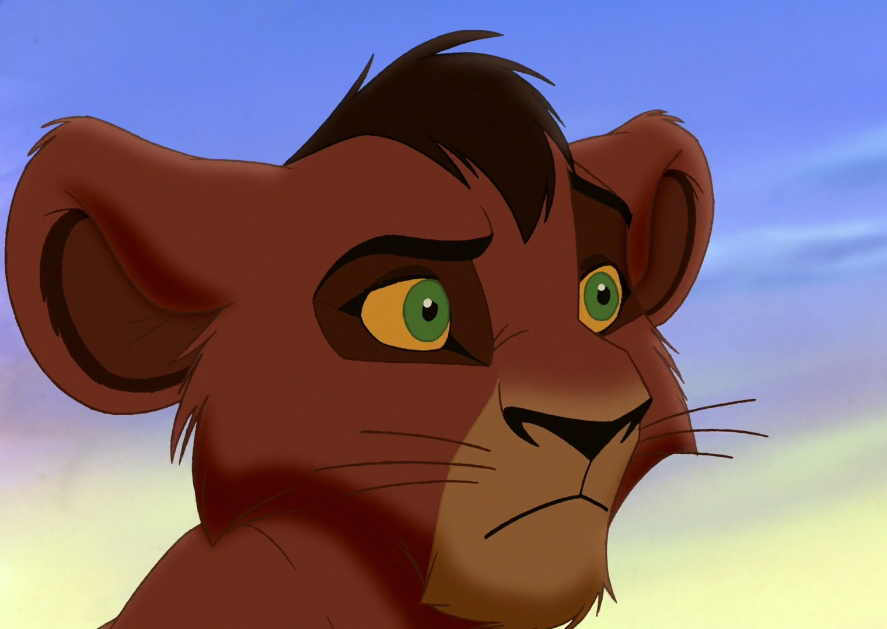
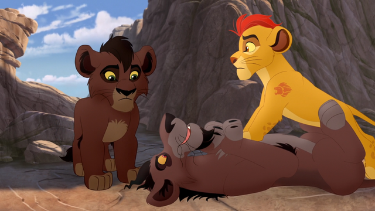
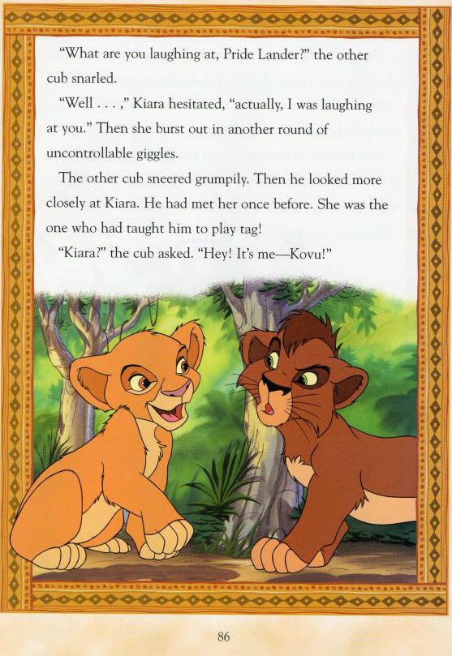

KOVU
Heir and Prince Consort of the Pride Lands.
Introduction
Kovu is stated to be the youngest son of Zira, who is a follower of Scar; his two older siblings are Nuka and Vitani. He was apparently born at some point during Scar's reign, as Scar hand-picked him to be his successor. As a result, he was referred to by the Outsiders as the Chosen One. However, Scar merely adopted him, and Kovu is of no relation to Scar. His chosen path was put to a halt after Simba took back the throne from Scar and exiled the Outsiders. As a result of Scar's death, Kovu was expected to one day avenge Scar by killing Simba and usurping the throne. As a cub, he was put through harsh training by Zira to prepare him for this task.
Analysis
By 1996, producer Jeannine Roussel and director Darrell Rooney signed on board to produce and direct the sequel. Andrew Collins was the supervising animator over the character of Kovu. According to Rooney, the final draft gradually became a variation of Romeo and Juliet. "It's the biggest love story we have," he explained. "The difference is that you understand the position of the parents in this film in a way you never did in the Shakespeare play."
Kovu's first appearance is in The Lion King II: Simba's Pride in which Kovu is first seen in the film when Kiara, a Pride Lander cub, wanders into the Outlands and accidentally trips off a fallen log and knocks into him.

He also made an appearance in The Lion Gaurd "Lions of the Outlands" when Kovu and his family drive a clan of hyenas away from their watering hole, one of the hyenas, Jasiri, goes to Kion for help. 
Finally, he can be seen in the story "A Little Help From a Friend", where Kiara identifies a strange cub as her old playmate, Kovu. 
Voice actors
The Lion King II: Simba's Pride - (1998) - (film) - Ryan O'Donohue (cub), Jason Marsden (young adult), Gene Miller (young adult singing voice)
The Lion Guard - (2016–) - (TV series) - Jason Marsden
More Information

Nuka was renamed Kovu, and voiced by Jason Marsden. He was originally scripted as Scar's son, but after realizing the incest this would have created in his romance with Kiara (as that would make him Simba's cousin and therefore Kiara's first cousin once removed), it was scrapped and clarified that he had no relation to Scar. Director Darrell Rooney later made a statement on Facebook about Kovu, describing him as an orphan, in which case, Zira would only be his adopted mother.